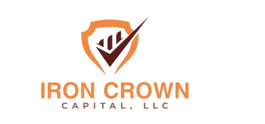

Request received
Your File Desk request is in.
Iron Crown has your access request. If the fit is right, the next step is the partner certification path and a cleaner route for the Amazon-economy files crossing your desk.

Request received
Iron Crown has your access request. If the fit is right, the next step is the partner certification path and a cleaner route for the Amazon-economy files crossing your desk.